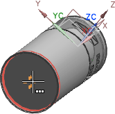
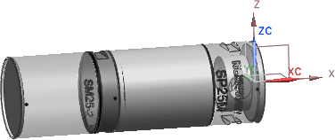
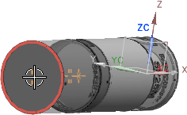
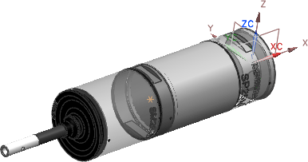

Use NX Assemblies to assemble body components
In this activity, you will assemble two probe body components to the SP25 component.
-
If it is not already selected, click Start
 →Assemblies.
→Assemblies.
-
On the Assemblies toolbar, click Add Component
 .
.
-
In the Add Component dialog box, toward the bottom of the Part group, click Open
 .
.
-
In the Part Name dialog box, select
[directory]\Renishaw_Probe_Library\Metric\SP25M\LA_2237_0370_C_SM25_2.prt
and then click OK.
The part appears selected in the Loaded Parts list, and appears in the Component Preview window.
-
In the Add Component dialog box, in the Placement group, from the Positioning list, choose Select Origin.
-
Click Apply.
-
In the Point dialog box, from the Type list, select Arc/Ellipse/Sphere Center.
-
In the graphics window, rotate the SP25 component so that the bottom is visible, and then position the SM25 probe body component by selecting the arc center of the interface point on the SP25 component.

The SP25 body component is added to the probe setup assembly.

-
In the Add Component dialog box, click Open
again.
-
In the Part Name dialog box, select LA_2237_0180_C_SH25_2.prt, and then click OK.
Note
In the Add Component dialog box, in the Placement group, your last Select Origin selection from the Positioning list is retained.
-
Click Apply.
-
Position the SH25 probe body component by selecting the arc center of the interface point on the SM25 component.

The SH25 body component is added to the probe setup assembly. Leave the Add Component dialog box open for the next activity.
